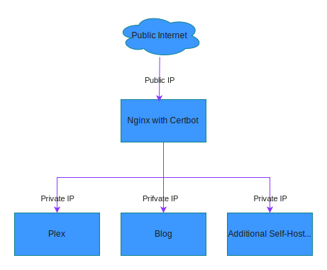

Deploying Services like Plex Behind an Nginx Reverse Proxy
Published on September 22, 2024 | Last updated on September 20, 2024
In this post, I describe a method for hosting any straightforward web service behind an nginx reverse proxy with automatically renewing Let's Encrypt SSL Certificates.
There are numerous web applications that can be self-hosted. I love checking out awesome-selfhosted on GitHub for ideas. These services differ in many ways: they are written in different languages, have different methods for hosting, handling SSL, and more. Hosting them easily with an automatically renewing SSL certificate is quite simple using nginx in a reverse proxy configuration.
Architecture

In this setup, there is a computer running nginx with a public IP address. There is a DNS record for every service behind the proxy. I typically use one DNS A record for the nginx reverse proxy and create a CNAME record for each service.
This minimizes the amount of code and potentially vulnerable software running on a publicly accessible computer. Certbot can run in one place, easily updating all SSL certificates, and nginx can terminate SSL quickly and reliably.
All the backend services can therefore run unencrypted on port 80, as they are behind a firewall with private IPs in a trusted environment. This simplifies deploying services, as a bespoke SSL configuration is not required.
Security Improvements
Although running on port 80 in the private address space is "fine," it would be more secure to use SSL between nginx and the services. However, doing this manually is quite annoying, and setting up a proper Certificate Authority and secrets management strategy is beyond the scope of this article. In a later article, I'll describe how to further secure this setup once I have Ansible Vault running in a private "core services" cluster.
Step By Step
If you want to recreate something similar, you may follow these steps:
1. DNS Setup
Configure your DNS provider to have a CNAME or A record for each service that you wish to host, pointing to the nginx server. For example, plex.example.com should point to the IP address of "Nginx with Certbot" in the diagram above.
This is necessary so that A) you can connect to your service, and B) Certbot can issue a certificate.
For example:
gateway.example.com. 300 IN A 123.123.123.123
plex.example.com. 300 CNAME gateway.example.com.
blog.example.com. 300 CNAME gateway.example.com.
other.example.com. 300 CNAME gateway.example.com.
2. nginx setup
Prerequisites
This section assumes that you have nginx installed on a server. If not, please install it. Digital Ocean has a comprehensive guide that I recommend: Installing Nginx on Ubuntu 20.04.
This guide covers more than is strictly necessary, but it's good information to know.
Configuration
For each service behind nginx, you will need a server block somewhere in the collection of files that nginx loads for its configuration.
Typically, there is a core configuration file /etc/nginx/nginx.conf, as well as one or more available sites in /etc/nginx/sites-available that are enabled by creating a symlink from /etc/nginx/sites-enabled. When nginx starts up, it looks at nginx.conf, which in turn includes all the files in sites-enabled (include /etc/nginx/modules-enabled/*.conf;).
For a basic service, you can start with something like this:
# /etc/nginx/sites-available/foo
upstream foo_server {
server 10.0.0.20:80;
}
server {
server_name foo.example.com;
location / {
proxy_pass http://foo_server;
proxy_set_header Host $host;
proxy_set_header X-Real-IP $remote_addr;
proxy_set_header X-Forwarded-For $proxy_add_x_forwarded_for;
proxy_set_header X-Forwarded-Proto $scheme;
}
listen 80;
}
Notes
There are a few things to keep in mind:
- The upstream
foo_servermust be unique. Multiple upstream directives with the same name is an error - If you are hosting multiple services on one machine, you'll need to make them listen on different ports, rather than port 80.
- When you run
certbot --nginxlater, it will edit this file - Some services require some additional configuration options
Testing and Enabling
Once you are happy with your base nginx configuration file, create a symlink from sites-enabled:
$ sudo ln -s /etc/nginx/sites-available/foo /etc/nginx/sites-enabled
Test your configuration by running:
$ nginx -t
nginx: the configuration file /etc/nginx/nginx.conf syntax is ok
nginx: configuration file /etc/nginx/nginx.conf test is successful
If it does not show an output like this, edit the file and keep checking until it passes.
Then reload nginx with
nginx -s reload
2024/09/22 21:31:16 [notice] 1183285#1183285: signal process started
If all is good, you should be able to access your server at foo.example.com.
Troubleshooting
-
Verify that you can access the "backend" via it's internal private IP.
-
check the
nginxlogs
tail -f /var/log/nginx/error.log
- Verify you can ping the backend from the reverse proxy host
- Check the logs from the backend
3. Get an SSL Certificate that automatically renews
Certbot in combination with Let's Encrypt makes it very easy to get a free SSL certificate. Digital Ocean has another great article on this. Check out How To Secure Nginx with Let's Encrypt on Ubuntu 20.04
If you just want to jump into it, it's as simple as :
Install Certbot
sudo apt install certbot python3-certbot-nginx
Run Certbot
certbot --nginx
Follow the prompts, and you are off to the races.
4. Review Updated nginx configuration
Open up the /etc/nginx/sites-available/foo in your favorite text editor.
upstream foo_server {
server 10.0.0.20:11280;
}
server {
server_name foo.example.com;
location /.well-known/acme-challenge/ {
root /var/www/certbot;
}
location / {
proxy_pass http://foo_server;
proxy_set_header Host $host;
proxy_set_header X-Real-IP $remote_addr;
proxy_set_header X-Forwarded-For $proxy_add_x_forwarded_for;
proxy_set_header X-Forwarded-Proto $scheme;
}
listen 443 ssl; # managed by Certbot
ssl_certificate /etc/letsencrypt/live/foo.example.com/fullchain.pem; # managed by Certbot
ssl_certificate_key /etc/letsencrypt/live/foo.example.com/privkey.pem; # managed by Certbot
include /etc/letsencrypt/options-ssl-nginx.conf; # managed by Certbot
ssl_dhparam /etc/letsencrypt/ssl-dhparams.pem; # managed by Certbot
}
server {
if ($host = foo.example.com) {
return 301 https://$host$request_uri;
} # managed by Certbot
server_name foo.example.com;
listen 80;
return 404; # managed by Certbot
}
Notice that it made a few changes:
- Added a new
serverblock that only listens on port 80 and redirects tohttpson port 443. - Changed the first
serverblock to listen on port 443 with SSL enabled. - Added a key, certificate, and two other configuration files.
Notes for Running Plex Server
To run Plex efficiently behind an nginx reverse proxy, you can make some additional edits to the configuration file.
Check out plex nginx.conf on GitHub for an extensively tweaked file.
I've settled on a subset of the tweaks, notably:
- HTTP/2
- Plex headers
- WebSocket support
I did not add gzip compression or OCSP stapling, but these seem like good ideas.
upstream plex {
server 10.0.0.22:32400;
}
server {
server_name plex.example.com;
listen 443 ssl http2; # Added http2
# Plex-specific configuration
client_max_body_size 100M;
proxy_buffering off;
location / {
proxy_pass https://plex;
proxy_ssl_verify off;
proxy_set_header Host $host;
proxy_set_header X-Real-IP $remote_addr;
proxy_set_header X-Forwarded-For $proxy_add_x_forwarded_for;
proxy_set_header X-Forwarded-Proto $scheme;
proxy_set_header Sec-WebSocket-Extensions $http_sec_websocket_extensions;
proxy_set_header Sec-WebSocket-Key $http_sec_websocket_key;
proxy_set_header Sec-WebSocket-Version $http_sec_websocket_version;
# Plex-specific headers
proxy_set_header X-Plex-Client-Identifier $http_x_plex_client_identifier;
proxy_set_header X-Plex-Device $http_x_plex_device;
proxy_set_header X-Plex-Device-Name $http_x_plex_device_name;
proxy_set_header X-Plex-Platform $http_x_plex_platform;
proxy_set_header X-Plex-Platform-Version $http_x_plex_platform_version;
proxy_set_header X-Plex-Product $http_x_plex_product;
proxy_set_header X-Plex-Version $http_x_plex_version;
# WebSocket support
proxy_http_version 1.1;
proxy_set_header Upgrade $http_upgrade;
proxy_set_header Connection "upgrade";
}
}
Notes for Ansible or other Configuration Management Setup
There is nothing you need to do here unless you plan on automatically updating the configuration file using a tool like Ansible. If so, you will need to add some logic to your Ansible role to check for the presence of valid SSL certificates. If valid certificates are found, render the full "post certbot" file. If not, render the basic one, run certbot, and then render the "post certbot" file.